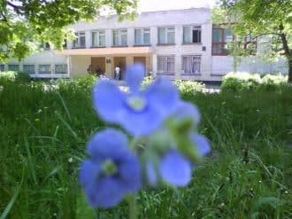

Інформація про мою школу
Я навчалась в ХСШ №29.Це школа з профільним англійским.Школа заснована у 1973 році.
Спочатку вона діяла як районний загальноосвітній заклад.
Лише завдяки діяльності директора школи Дроботько В.І. вона у 1976 році набула статусу спеціалізованої школи.
В мене була чудова классний керівник.
З цікавих фактів в мене було два предмета английською, окрім англійскої мови.Це література Великобританії та США.
Взагалі то, про мою школу мало цікавих фактів, мені вона не подобалась, але коли я це зрозуміла переходити в іншу не бачила сенсу.
Школа заснована у 1973 році. Спочатку вона діяла як районний загальноосвітній заклад.
Лише завдяки діяльності директора школи Дроботько В.І. вона у 1976 році набула статусу спеціалізованої школи.
